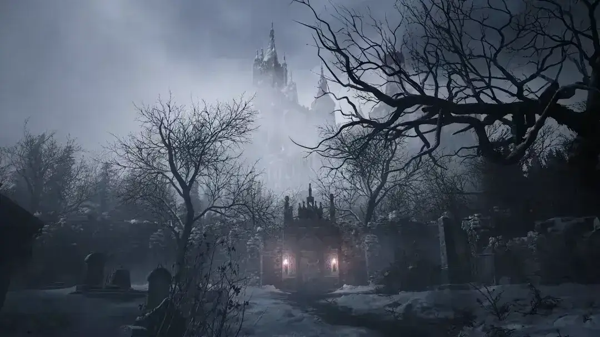
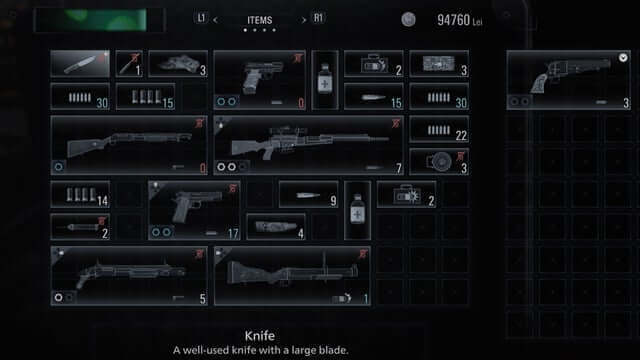
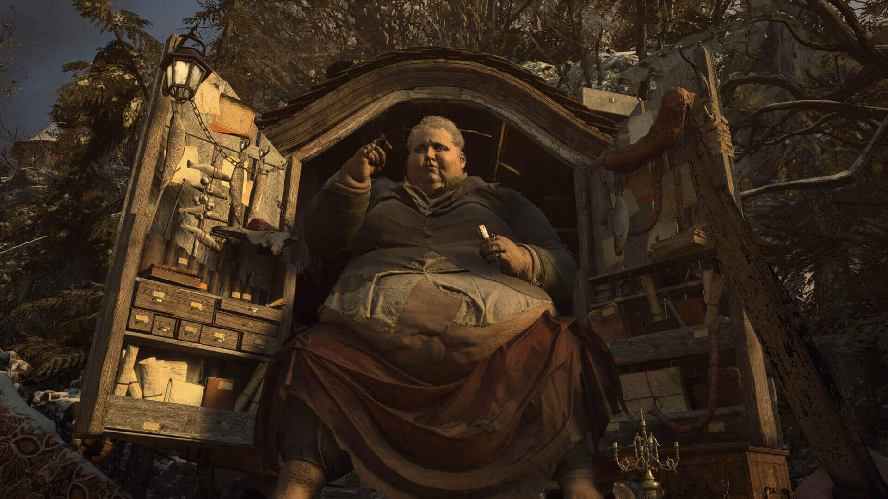
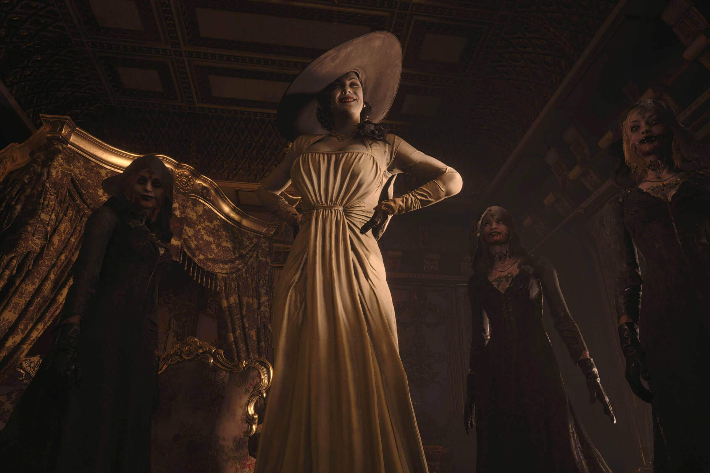
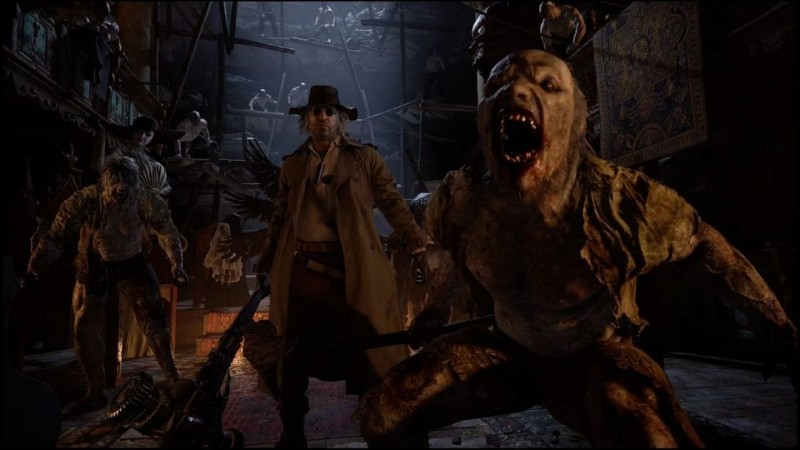
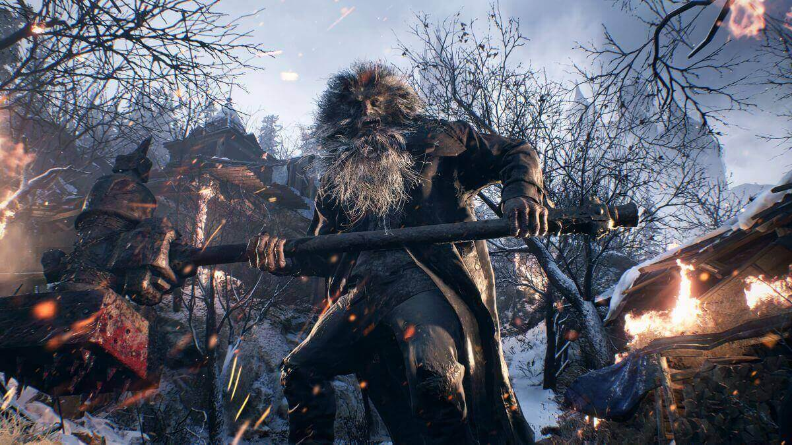
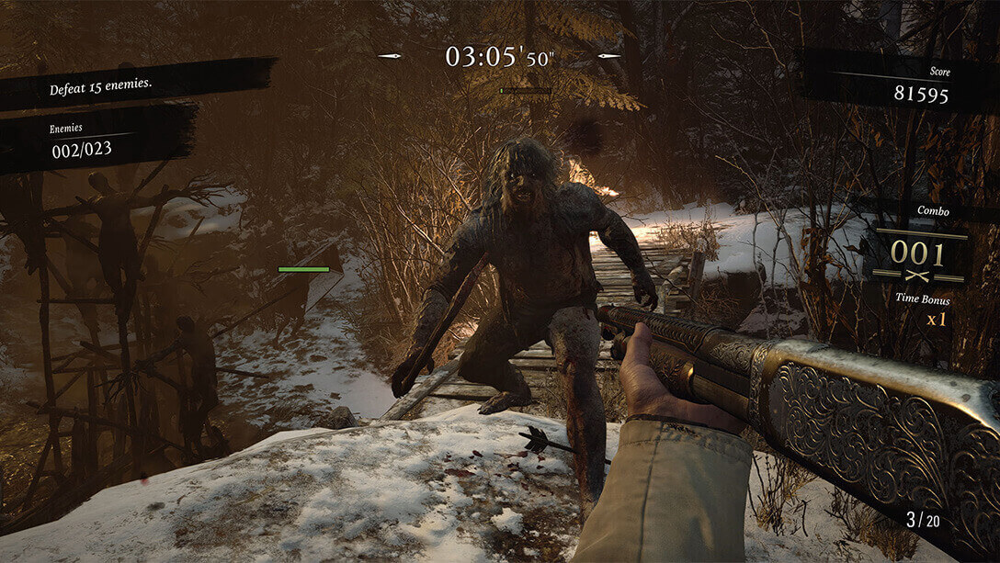
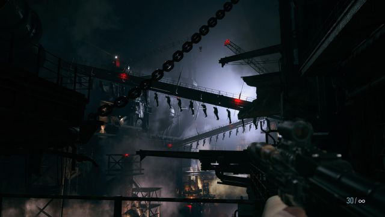

Resident Evil: Village
Aviso: Este análisis se ha hecho jugando solo la versión de PC
Si hay algo que no se puede negar de Resident Evil es que es una saga que siempre busca reinventarse a sí misma para sorprender a los jugadores con diferentes fórmulas e ideas que no siempre han terminado de funcionar igual de bien. A lo largo de los años, Capcom nos regalo juegos increíbles como Resident Evil 4, Resident Evil Remake o Resident Evil 7, pero también nos toco jugar algunas entregas que se quedaron a medio gas como Resident Evil 6 o Resident Evil 3 Remake.
Basta echarle una ojeada a estos juegos que mencionamos para detectar que actualmente la saga tiene dos vertientes muy bien diferenciadas entre las entregas que apuestan por el terror y las que han preferido centrarse en la acción pura y dura, con honrosas excepciones como Resident Evil 2 Remake, probablemente el título que mejor equilibra ambos extremos de la balanza.
Ahora le toca el turno a Resident Evil: Village, uno de los juegos más esperados y deseados del año, una entrega muy experimental que se ha propuesto reunir lo mejor de Resident Evil 4 y Resident Evil 7 en una aventura que no siempre tiene del todo claro qué es exactamente lo que quiere ser y que no llega al nivel de sus fuentes de inspiración, pero que nos deja para el recuerdo uno de los viajes más variados, entretenidos y amenos de toda la serie.
Trailer
En Las Manos De Ethan Winters
Esta vez la historia es una secuela directa de Resident Evil 7, por lo que volveremos a encarnar a Ethan Winters, quien deberá rescatar a su hija en una siniestra aldea de montaña repleta de criaturas peligrosas. Sobre su historia no nos vamos a extender demasiado para no arruinar nada, pero sí queremos advertir de que el guion es un disparate que nos va a pedir, más que nunca, que aceptemos la locura que nos están contando sin hacer demasiadas preguntas, incluyendo una forzadísima conexión con el resto de la saga para justificar que es una entrega principal.
En lo que respecta al juego como tal, Capcom volvió a apostar por una cámara en primera persona para sumergirnos en una aventura de acción y terror en la que tendremos que avanzar por una serie de escenarios resolviendo puzles, abriendo puertas, recogiendo recursos y luchando contra un buen número de monstruos.

Si hay algo que hace realmente bien es plantearnos un viaje variadísimo que sabe hacer de la diversidad de situaciones su gran fortaleza. Se trata de un título que nunca se queda quieto y que siempre está proponiéndonos distintos retos que van tocando casi todos los palos de la saga, desde el terror más puro hasta la acción más frenética y excesiva. Además, se rompió la clásica estructura de tres actos de la serie para llevarnos a visitar multitud de escenarios diferentes y que nunca sepamos qué esperar de cada una de sus regiones, evitando así que nos dé tiempo a aburrirnos o a acomodarnos.
El Nuevo Inventario.
A diferencia de otras entregas, en este juego apenas tendremos dolores de cabeza a la hora de gestionar nuestro inventario, ya que los ítems clave, los tesoros para vender y los materiales para fabricar munición y objetos se guardan en pestañas independientes sin límite de espacio. Por su parte, las armas, balas, carnes y brebajes se almacenarán en un maletín muy similar al de 'Resident Evil 4'.

Ahora bien, esto se ha conseguido a cambio de sacrificar casi por completo la exploración. Si esperabas un mapa enrevesado, intricado y lleno de conexiones donde nos perdemos dando vueltas y buscando el camino al estilo de la casa de los Baker, la comisaría de Raccoon City o la mansión Spencer, nos apena confirmar que no hay nada ni remotamente similar, ya que el diseño de niveles es extremadamente lineal y guiado.
Esto no es algo negativo como tal, pero el diseño de los escenarios por los que hemos pasado nos resultaron bastante simples, básicos y poco atractivos. Una gran pena, ya que su ambientación se prestaba totalmente a haber hecho algo muy grande y ambicioso.
Bienvenido, Extranjero.
El Duque es un personaje que nos vende todo tipo de cosas a cambio de dinero. También puede mejorar nuestras armas y cocinar platos con la carne de los animales que cacemos para que nos den potenciadores permanentes. Adicionalmente, podremos venderle nuestros tesoros y todo lo que no necesitemos para sacarnos un extra.

Lamentablemente, también tenemos que hablar de un desarrollo irregular que no siempre acierta en todo lo que hace. Por ejemplo, el juego del gato y el ratón con Lady Dimitrescu y sus hijas está totalmente desaprovechado y no consigue generar ningún tipo de tensión por lo fáciles que resultan de evitar y las áreas tan limitadas por las que se mueven.
Los puzles tampoco nos convencieron en lo más mínimo por lo simples y poco ingeniosos que resultan, y los combates contra los jefes se resumen en rellenarlos de plomo mientras evitamos sus dos únicos patrones de ataque una y otra vez

Ojo, esto no quiere decir que todo sea negativo, ya que el título tiene también partes muy buenas e incluso las peores saben mantener un buen ritmo para impedir que caigamos presas del aburrimiento. De hecho, la puesta en escena es increíble, con secciones que son un espectáculo y un despliegue de medios, tanto a la hora de pegar tiros como a la de pasar miedo.
Si tuviésemos que describir Resident Evil: Village con una sola palabra, probablemente diríamos que es, ante todo, muy "disfrutable". Sí, tiene defectos y se queda unos peldaños por debajo de las mejores entregas de la serie, pero nunca aburre, está repleto de sorpresas, su ambientación es increíble y los nuevos enemigos a los que tenemos que hacer frente nos gustaron muchísimo, tanto por diseño como por sus comportamientos, aportando algo fresco dentro de la serie para obligarnos a plantear los enfrentamientos de un modo distinto.

Una Aventura Rejugable.
Llegar hasta el final es algo que nos llevo unas 9 horas exactas en su dificultad Normal explorando todo lo que pudimos y sin morir, una duración que nos parece más que aceptable, especialmente si tenemos en cuenta los enormes valores rejugables de los que hace gala. Una vez completemos la historia principal desbloquearemos el menú de desafíos, donde nos indicarán una gigantesca lista de retos para cumplir que nos recompensarán con unos puntos que podremos invertir en una tienda especial para desbloquear armas con munición infinita, modelados, ilustraciones, etcétera.
Gracias a ello nos animarán a que volvamos a jugarlo en dificultades más altas, a buscar todos los coleccionables y a hacer cosas muy concretas, como romper todas las ventanas del Castillo Dimitrescu o matar a un boss en un tiempo determinado, algo que resulta muy entretenido por la posibilidad de conservar todo nuestro inventario y las mejoras de armas de una partida a otra. De hecho, hay armas y recetas de fabricación que solo podremos adquirir a partir de nuestra segunda vuelta, así que no nos faltarán motivos para regresar una y otra vez.

Pero, sin duda alguna, la gran estrella es el regreso del Modo Mercenarios, un clásico de la serie que por fin vuelve y que resulta tan adictivo como lo recordábamos. No podremos acceder a él hasta terminar la aventura por primera vez, pero una vez lo tengamos desbloqueado podremos disfrutar de una modalidad totalmente arcade que nos propondrá superar una serie de arenas a contrarreloj encadenando tantas muertes como podamos para aumentar nuestro multiplicador de puntos.

Es una modalidad que engancha muchísimo y que sabe cómo picarnos para que rejuguemos cada fase montones de veces hasta conseguir alcanzar la máxima puntuación posible, por lo que no entendemos que Capcom haya prescindido de incluir marcadores online para que podamos competir contra otros jugadores en unas tablas de clasificación.
Una Aldea Fascinante.
A nivel gráfico tenemos un juego muy llamativo que destaca en multitud de frentes, como los modelados de los personajes, las animaciones faciales o la iluminación, además de contar con unos escenarios repletos de detalles.
Se nota que es un juego intergeneracional y que el salto visual con la séptima entrega no es tan grande como cabría esperar, pero no quita que el conjunto sea tremendamente bueno. Además, podemos jugar a 4K y 60 fps en las consolas de nueva generación, aunque les avisamos que el rendimiento es algo más inestable si optamos por activar la opción de Ray-Tracing.

Eso sí, a su dirección de arte no le podemos decir nada, ya que es absolutamente increíble y magistral lo que Capcom consiguio hacer, transportándonos de lleno a un mundo fascinante y con una identidad propia muy marcada, algo que se aplica tanto a los escenarios como a los personajes y criaturas.
Sonido.
Por último, tenemos que aplaudir todo lo relacionado con el sonido, empezando por la implementación de la tecnología de audio 3D (imprescindible jugarlo con unos buenos auriculares). Tampoco nos podemos olvidar de su enorme cantidad de efectos de calidad ni de su banda sonora que eleva la tensión a niveles insospechados en cada enfrentamiento.
Conclusión.
Resident Evil: Village es una entrega muy disfrutable con la que la pasamos realmente bien, pero no consiguio terminar de enamorarnos. Que nadie se equivoque: Se trata de un buen juego que sabe hacer de su ritmo, variedad de situaciones, rejugabilidad y fascinante ambientación sus principales fortalezas para ofrecernos una aventura entretenidísima de principio a fin y repleta de grandes momentos que no conoce la palabra aburrimiento, pero a la que sus errores le impiden codearse con los mejores representantes de su saga.
Para jugarlo en PC Encontralo en